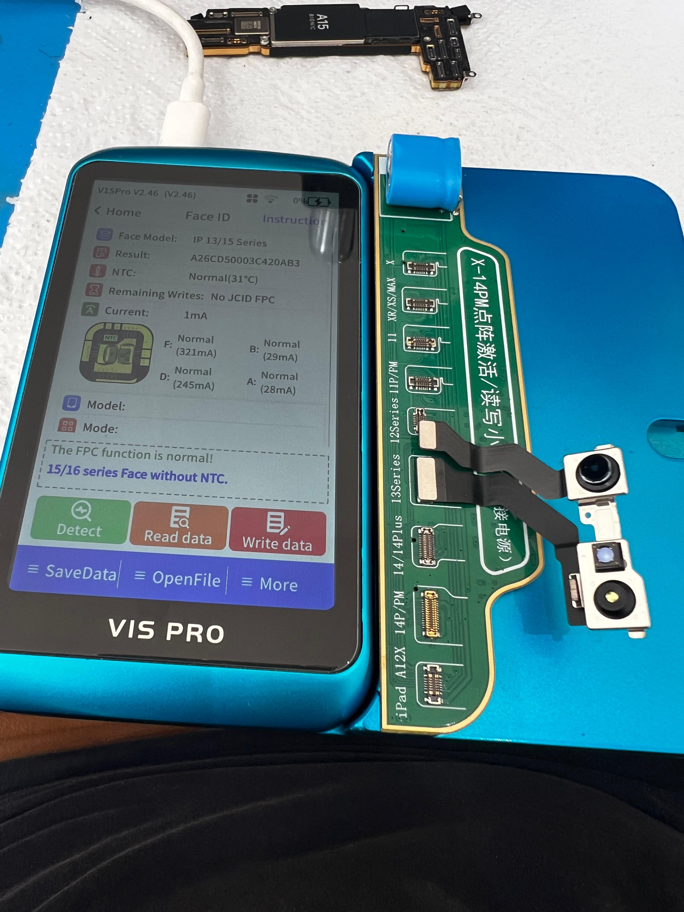

O que nós resolvemos
Contato com Água
Oxidação no projetor de pontos é a causa nº 1 de falhas. Fazemos a limpeza química e reconstrução.
Erro de Posicionamento
Quando o iPhone pede para mover a cabeça mas não reconhece. Isso é falha no CI do Dot Projector.
Tecnologia Exclusiva
Utilizamos programadoras de última geração que permitem trocar os componentes queimados do Face ID mantendo a criptografia original da Apple.
Diferente de assistências comuns que apenas trocam peças (perdendo a função), nós transferimos os dados de segurança criptografados para o novo componente. Seu desbloqueio facial volta a funcionar como novo com 100% de segurança.
